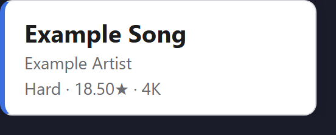
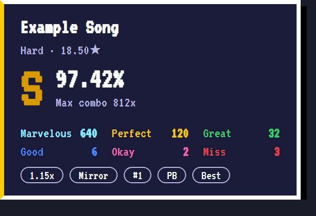
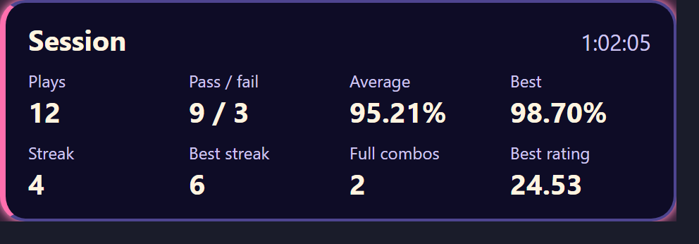
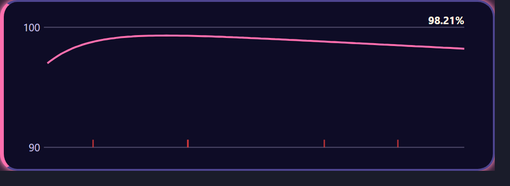
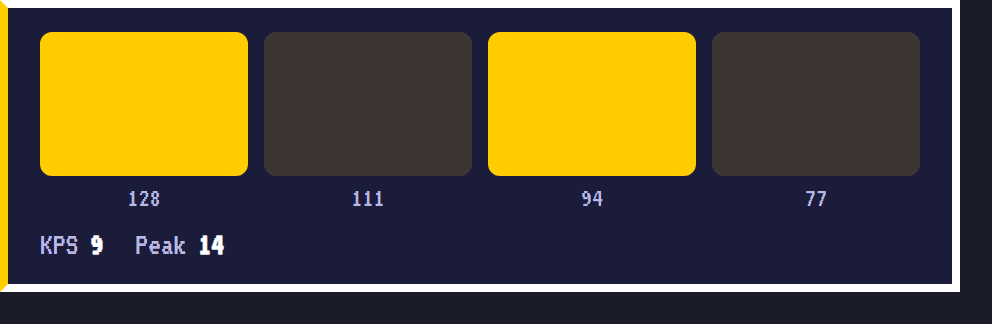

Live Quaver data for your stream overlays
QuaverStreamCompanion (qsc) is a small local app that follows your Quaver games and serves the game state, the map you are playing and the result of every play to ready-made OBS overlays.
Download the latest release View the source
Free and open source (MIT). Windows 10 and later is tested. Linux is tested in CI with simulated Steam folders, but not yet with a real Quaver install.
Up and running in three steps
-
Download
Get the archive for your system from the releases page, check it against
checksums.txtand unzip it. There is no installer. -
Run it
Start
qsc --open. It finds your Quaver folder, serves everything on your own machine and opens the dashboard in your browser. -
Add the overlays in OBS
On the Overlays page, copy a link and paste it into an OBS Browser source. Then play a map: the overlay appears when you start and hides in the menu.
Eight overlays, eleven themes
Now playing, result, history, state, alert, lane keys, judgment curve and session statistics, each in 11 built-in themes or in a theme of your own. These are the real overlays in demo mode, with made-up data.

neutral-light
pixel
neon-cosy
neon-cosy
pixelLocal, and nothing leaves your machine
- It only reads files Quaver already writes:
Logs/runtime.logandquaver.db, which is opened read-only. - It never reads game memory, never modifies or injects into the game, and never writes to the Quaver folder.
- No account, no telemetry and no online service. The server listens on
127.0.0.1only. - Lane keys and KPS are opt-in, off by default, and work on Windows only.
- QuaverStreamCompanion is an unofficial tool and is not affiliated with Quaver. Quaver is a trademark of its respective owners.